At the wordsmith, any two different level 1 runes can now meld into one rune that does both runes' jobs. Here's how the new runes look in the game. They stay switched off until you say yes.
The new stones
Each one is the two runes' stones broken down the middle and fused: half of each rune, a seam between them, and both colours along the foot, like the melds you already have.
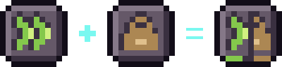
Swift + Heavy = Swift-Heavy
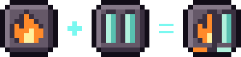
Flame + Twin = Flame-Twin
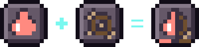
Leech + Vast = Leech-Vast
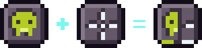
Poison + Precise = Poison-Precise
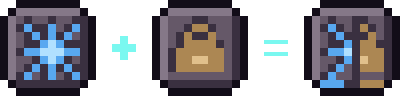
Frost + Heavy = Frost-Heavy
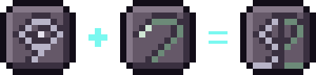
Hexing + Reaping = Hexing-Reaping
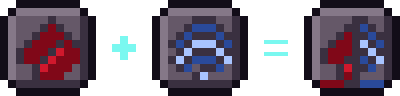
Bleeding + Surging = Bleeding-Surging
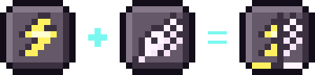
Lightning + Fleeting = Lightning-Fleeting
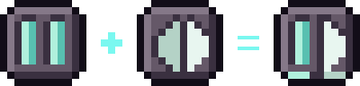
Twin + Mirroring = Twin-Mirroring
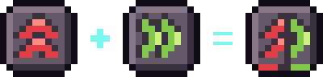
Power + Swift = Power-Swift
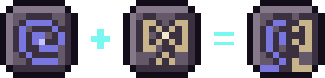
Pulling + Binding = Pulling-Binding
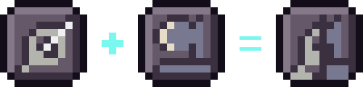
Piercing + Culling = Piercing-Culling
In the game
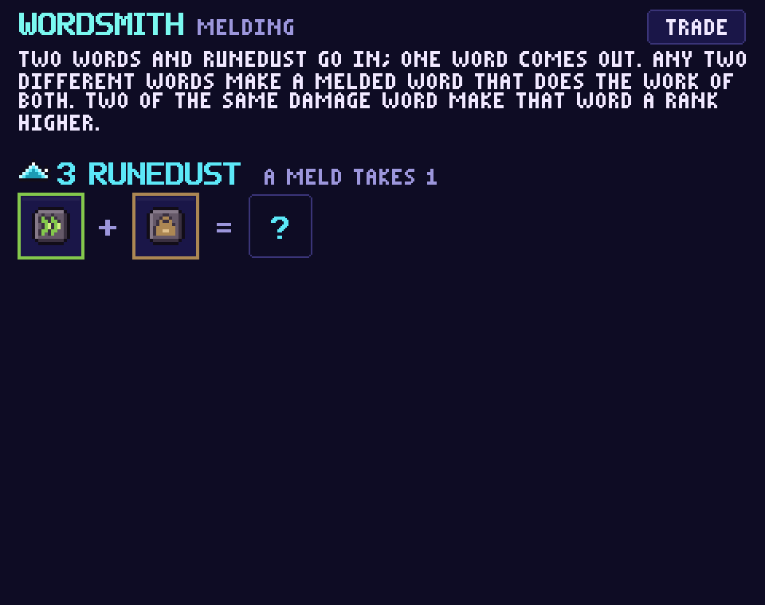
At the wordsmith: Swift and Heavy laid in. The page now says any two runes go in.
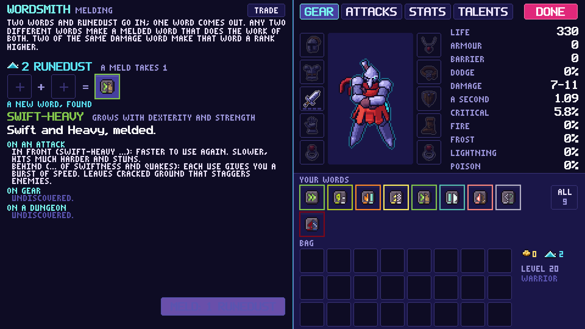
Melded for one runedust: Swift-Heavy, a new word found, with what it does in front and behind.
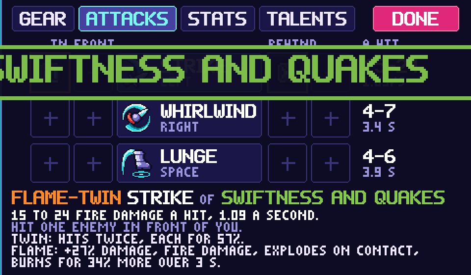
Set on the Strike: Flame-Twin in front and Swift-Heavy behind. The move is named “Flame-Twin Strike of Swiftness and Quakes”.
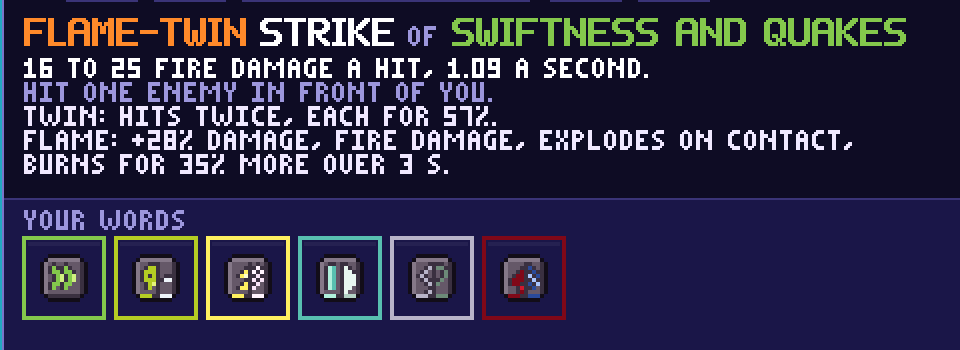
Your words, with a few of the new stones.
How they play
355 new melds: every pair of the 28 runes the game didn't have a meld for. The 23 melds you already have (Eruption, Forking and the rest) keep their special twists, and the same two runes still make them.
One rune does both runes' jobs. A damage rune inside it works at three quarters, as in your other melds; any other rune works in full.
It takes the damage rune's place on its side of a move, as melds do now. A rune that's already inside it can't go beside it.
Two of the same damage rune still rank up (Power + Power = Power II). Two of the same other rune don't meld.
On gear: one property from each rune, each at three quarters. On a dungeon's altar it counts as two runes, and the monsters carry both.
All 355
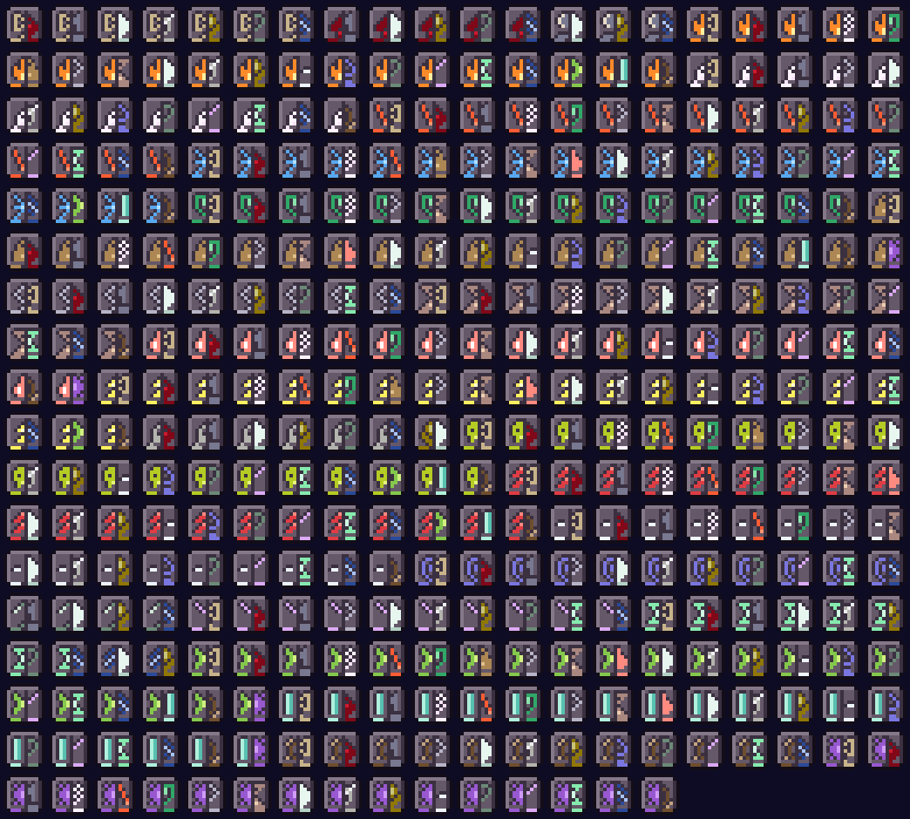
Your call
Tell me in the chat to switch them on, or what to change.